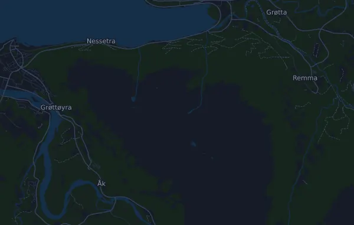

Romsdalseggenløpet – Fjord to Summit (28 km)
- Distancia
- 28 km
- Desnivel positivo
- ↑ 2238 m
- Punto más alto
- 1204 m s. n. m.
- Superficie
- Trail y sendero
- Perfil
- Montañoso
- Salida
- 10:00 h
- Avituallamientos
- 1
Perfil de altitud
Prepárate con Mila
Mila es un coach de running en una app. Si añades una carrera a tu plan, el coach planifica tus semanas hasta la salida según tu forma y te da un pronóstico de tiempo y un plan de ritmo, hidratación y energía para el recorrido.

La sesión justa. El día justo.
El recorrido

Sobre el recorrido
Romsdalseggenløpet – Fjord to Summit (28 km) es una carrera de trail de 28 km (Åndalsnes, Noruega). El recorrido acumula 2238 m de desnivel positivo y 2233 m de desnivel negativo, 80 m por km, así que es montañoso. El punto más alto está a 1204 m sobre el nivel del mar y el más bajo a 11 m.
La subida más grande empieza en el km 10,2: 1139 m de desnivel en 10,4 km, con un 11,0 % de media, hasta los 1162 m. En total, el recorrido tiene 4 subidas de al menos 25 m; la última empieza en el km 21,0.
El organizador prevé un avituallamiento, en el km 13,0.
En la app Mila, el coach describe el recorrido en detalle en tu idioma y planifica tu ritmo y tu avituallamiento.
Subidas
| Empieza en | Longitud | Desnivel | Pendiente | Cima (m s. n. m.) |
|---|---|---|---|---|
| km 0,0 | 3,8 km | 837 m | 22,1 % | 848 |
| km 4,5 | 1,1 km | 116 m | 10,3 % | 825 |
| km 10,2 | 10,4 km | 1139 m | 11,0 % | 1162 |
| km 21,0 | 500 m | 96 m | 19,2 % | 1204 |
Antes de la salida
Avituallamientos
| En | Qué hay |
|---|---|
| km 13,0 | agua, bebida isotónica, comida |
Horas de salida
- 10:00 h
Fuente: norskfjellfestival.no, consultado el 24 de noviembre de 2026
Tabla de ritmos
Romsdalseggenløpet – Fjord to Summit (28 km) en 2:15:00 – ritmo por km y tiempos de paso
4:49 min/km · km 10: 48:13 · km 20: 1:36:26 · meta: 2:15:00
Romsdalseggenløpet – Fjord to Summit (28 km) en 2:45:00 – ritmo por km y tiempos de paso
5:54 min/km · km 10: 58:56 · km 20: 1:57:51 · meta: 2:45:00
Romsdalseggenløpet – Fjord to Summit (28 km) en 3:15:00 – ritmo por km y tiempos de paso
6:58 min/km · km 10: 1:09:39 · km 20: 2:19:17 · meta: 3:15:00
Romsdalseggenløpet – Fjord to Summit (28 km) en 3:45:00 – ritmo por km y tiempos de paso
8:02 min/km · km 10: 1:20:21 · km 20: 2:40:43 · meta: 3:45:00
Los tiempos suponen un ritmo constante de principio a fin. Es pura aritmética, no un pronóstico: en las subidas, entre la gente y en los avituallamientos el ritmo varía.
Preguntas frecuentes
¿Cuándo es Romsdalseggenløpet – Fjord to Summit (28 km)?
Romsdalseggenløpet – Fjord to Summit (28 km) se celebra el sábado, 4 de septiembre de 2027. Comprueba la fecha y la hora de salida con el organizador.
¿A qué hora sale Romsdalseggenløpet – Fjord to Summit (28 km)?
Según el organizador: 10:00 h.
¿Cuánto mide Romsdalseggenløpet – Fjord to Summit (28 km) y cuánto desnivel tiene?
La carrera tiene 28 km, con 2238 m de desnivel positivo y 2233 m de desnivel negativo. El punto más alto está a 1204 m sobre el nivel del mar.
¿Cómo es el recorrido de Romsdalseggenløpet – Fjord to Summit (28 km)?
El recorrido es montañoso, con 80 m de desnivel por km de media. Tiene 4 subidas de al menos 25 m; la mayor empieza en el km 10,2: 1139 m en 10,4 km. La salida y la meta están en el mismo lugar. Se corre por senderos y caminos.
¿Hay avituallamientos en Romsdalseggenløpet – Fjord to Summit (28 km)?
Sí. El organizador prevé un avituallamiento: km 13,0 (agua, bebida isotónica, comida).
¿Cómo reparto el ritmo en Romsdalseggenløpet – Fjord to Summit (28 km)?
Busca un esfuerzo constante más que un ritmo constante: deja que el ritmo baje en las subidas, recupéralo cuando el terreno se allane y contente en los primeros kilómetros. Las subidas más grandes empiezan en el km 0,0, km 4,5, km 10,2 y km 21,0. En Mila tienes un plan de ritmo para este recorrido, según tu propia forma.
Más carreras como esta
Más carreras cerca
- DNB Oslo Maraton – Halvmaraton 21 km18 de septiembre de 2027 · Oslo, Noruega
- DNB Oslo Maraton – Maraton 42,7 km18 de septiembre de 2027 · Oslo, Noruega
- Hytteplanmila 10 km16 de octubre de 2027 · Røyse, Hole (Svendsrudmoen), Noruega
- Midnight Sun Marathon 42,2 km19 de junio de 2027 · Tromsø, Noruega
- Midnight Sun Marathon – Mizuno Half Marathon 21 km19 de junio de 2027 · Tromsø, Noruega
- Birkebeinerløpet 21 km12 de junio de 2027 · Lillehammer (Birkebeineren skistadion), Noruega
Prepárate con Mila
La sesión justa. El día justo.
Los datos proceden del archivo del recorrido y de la información del organizador. Comprueba la fecha, las horas de salida y el reglamento con el organizador.
Mila no está vinculada al organizador ni a los patrocinadores de la carrera, ni está patrocinada o avalada por ellos. Los nombres y las marcas pertenecen a sus propietarios. ¿Organizador o titular de derechos? Solicitar un cambio o la retirada